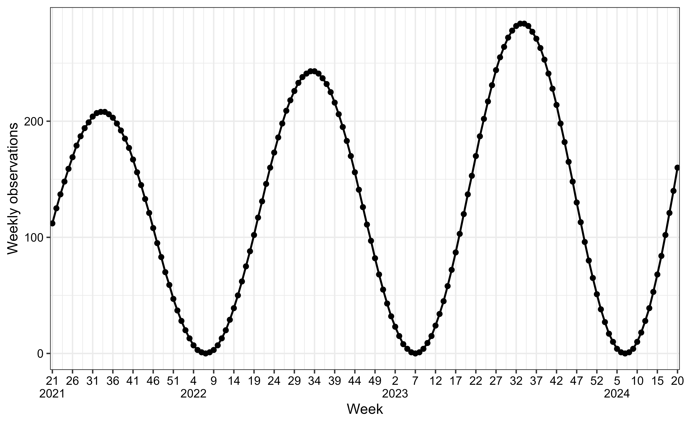
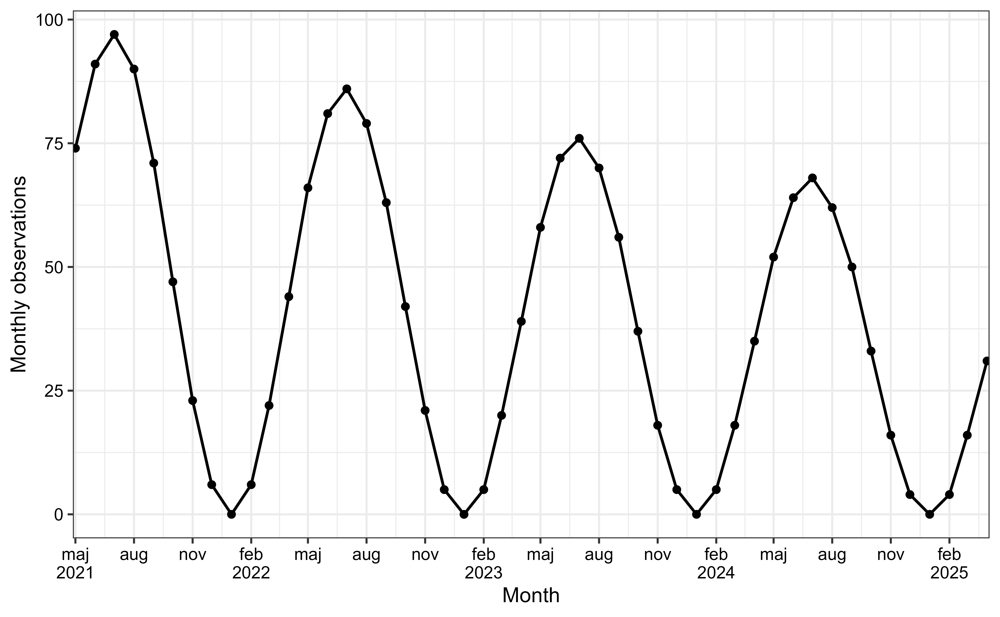
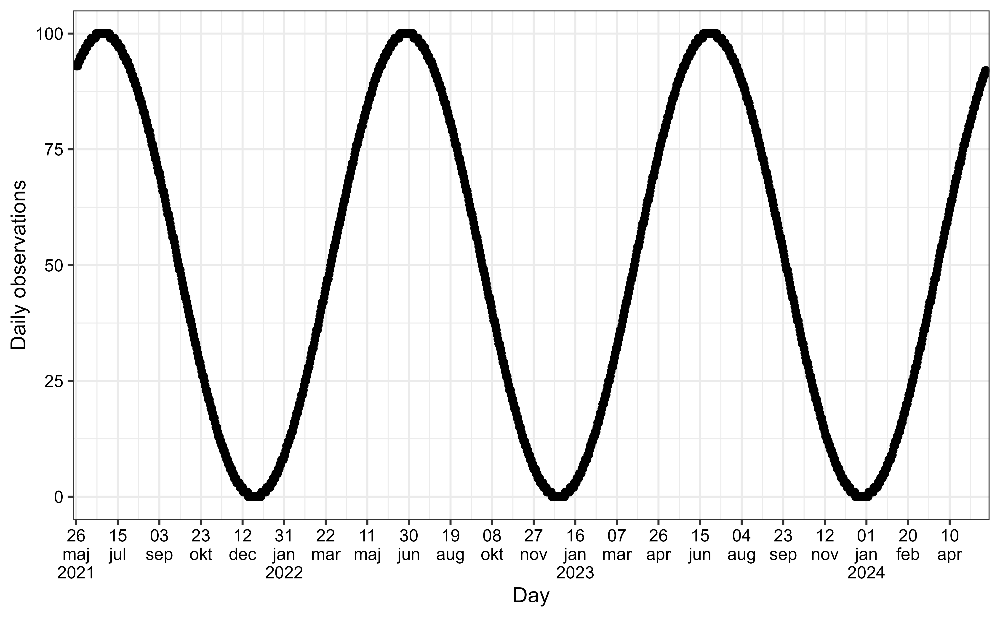

Simulate Seasonal Epidemic Waves
Source:R/vignettes/generate_seasonal_wave.Rmd
generate_seasonal_wave.RmdSimulation
To demonstrate seasonal variation in a time series while accounting
for trends and variability, we use the
generate_seasonal_wave() function. This function generates
a sinusoidal wave to represent periodic fluctuations, such as dayly,
weekly or monthly cycles, while also incorporating optional exponential
trend and random noise. This makes it suitable for modeling more
realistic phenomena like infection rates. The wave is defined by the
following equation: \[
\text{E[SeasonalWave}(t)\text{]} =
\text{mean} + \text{amplitude} \cdot \left(
\frac{\left(\sin\left(\frac{2\pi t}{\text{period}} + \text{phase}\right)
+ 1\right)^{\text{relative_epidemic_concentration}}}
{2^{\text{relative_epidemic_concentration} - 1}} - 1
\right)
\cdot e^{\log(\text{trend_rate}) \cdot t}
\]
Where:
- \(t\): The time variable (e.g., weeks or months, represented on the x-axis).
- \(\text{amplitude}\): Controls the height of the oscillations; the output varies between \(\text{mean} \pm \text{amplitude}\).
- \(\text{mean}\): The baseline value around which the seasonal wave oscillates. Must be greater than or equal to the amplitude.
-
\(\text{period}\): Defines the
cycle length (e.g., 52 weeks for yearly seasonality) (is calculated
based on
time_interval). - \(\text{phase}\): Adjusts the horizontal position of the wave on the x-axis.
- \(\text{trend_rate}\): Controls the exponential growth or decay of the trend over time.
- \(\text{relative_epidemic_concentration}\): Transforms the reference sinusoidal season. A value of 1 gives the pure sinusoidal curve, and greater values concentrate the epidemic around the peak.
Furthermore, noise can be controlled by the
noise_overdispersion parameter.
- 0: Deterministic, no noise.
- 1: Poisson-distributed noise.
- >1: Negative binomial-distributed noise (higher values mean greater overdispersion).
The first step is to create and transform simulated data into a
tsd object using the generate_seasonal_data()
function.
-
time_intervalis a character vector specifying the time interval, choose between “day,” “week,” or “month.”
seasonal_wave_sim_weekly <- generate_seasonal_data(
years = 3,
start_date = as.Date("2021-05-26"),
amplitude = 100,
mean = 100,
trend_rate = 1.003,
time_interval = "weeks"
)Plot seasonal waves
The aedseo package has an implemented a
plot() S3 method to plot the tsd object. The
time_interval argument can be used to visualise the x-axis
as desired, either with days, weeks or months.
The following figures shows the simulated data (solid circles) as individual observations. The solid line connects these points, representing the underlying mean trend over three years of weekly data.
Example of positive trend (weekly observations)
The x-axis shows the weeks and years, while the y-axis represents the
simulated observations. In this simulation there is a positive
trend_rate, which can be seen as the observations increase
exponentially across seasons.
plot(seasonal_wave_sim_weekly, time_interval = "5 weeks")
Example of negative trend (monthly observations)
The x-axis shows the months and years, while the y-axis represents
the simulated observations. In this simulation there is a negative
trend_rate, which can be seen as the observations decrease
exponentially across seasons.
seasonal_wave_sim_monthly <- generate_seasonal_data(
years = 4,
start_date = as.Date("2021-05-26"),
amplitude = 50,
mean = 50,
trend_rate = 0.99,
time_interval = "months"
)
plot(
seasonal_wave_sim_monthly,
time_interval = "3 months",
y_label = "Monthly observations"
)
Example of no trend (daily observations)
The x-axis shows the days, months, years, while the y-axis represents the simulated observations. In this simulation there is no trend.
seasonal_wave_sim_daily <- generate_seasonal_data(
years = 3,
start_date = as.Date("2021-05-26"),
amplitude = 50,
mean = 50,
time_interval = "days"
)
plot(
seasonal_wave_sim_daily,
time_interval = "50 days",
y_label = "Daily observations"
)
Example of phase shift (daily observations)
A phase shift in a sinusoidal pattern effectively shifts where the
wave starts along the x-axis instead of peaking (or hitting zero) at the
same times as a wave with phase = 0 (like in previous
plot), it is shifted in time. in this example where
phase = 1 rather than 0, we see that the rise
and fall of the sine wave happens later compared to a wave with no phase
shift.
seasonal_wave_sim_daily_phase_shift <- generate_seasonal_data(
years = 3,
start_date = as.Date("2021-05-26"),
amplitude = 50,
mean = 50,
phase = 1,
time_interval = "days"
)
plot(
seasonal_wave_sim_daily_phase_shift,
time_interval = "50 days",
y_label = "Daily observations"
)
Examples of different noise scenarios
The following examples illustrate how varying
noise_overdispersion affects the realism and variability of
simulated data, enabling the modeling of realistic epidemic scenarios.
The noise is the jumps between observations, instead of smoothly
transitioning between observations.
Deterministic (no noise)
sim_no_noise <- generate_seasonal_data(
years = 3,
start_date = as.Date("2021-05-26"),
amplitude = 100,
mean = 100,
noise_overdispersion = 0,
time_interval = "weeks"
)
plot(
sim_no_noise,
time_interval = "5 weeks"
)
Poisson-distributed noise
sim_poisson_noise <- generate_seasonal_data(
years = 3,
start_date = as.Date("2021-05-26"),
amplitude = 100,
mean = 100,
noise_overdispersion = 1,
time_interval = "weeks"
)
plot(
sim_poisson_noise,
time_interval = "5 weeks"
)
Negative binomial-distributed noise (high overdispersion)
sim_nb_noise <- generate_seasonal_data(
years = 3,
start_date = as.Date("2021-05-26"),
amplitude = 100,
mean = 100,
noise_overdispersion = 5,
time_interval = "weeks"
)
plot(
sim_nb_noise,
time_interval = "5 weeks"
)Examples of different epidemic concentrations
Pure sinusoidal season
sim_sinus <- generate_seasonal_data(
years = 2,
start_date = as.Date("2021-05-26"),
amplitude = 100,
mean = 100,
relative_epidemic_concentration = 1,
time_interval = "weeks"
)
plot(
sim_sinus,
time_interval = "5 weeks"
)Epidemic concentrated season
The following examples illustrate how varying
relative_epidemic_concentration affects the time period for
when we observe observations. When the value is increased, the
observations are concentrated around the peak. This enables the model to
improve it’s abbility to model realistic epidemic scenarios, as we
commonly see several weeks with no or low infection rates and a shorter
epidemic period.
sim_conc <- generate_seasonal_data(
years = 2,
start_date = as.Date("2021-05-26"),
amplitude = 100,
mean = 100,
relative_epidemic_concentration = 4,
time_interval = "weeks"
)
plot(
sim_conc,
time_interval = "5 weeks"
)